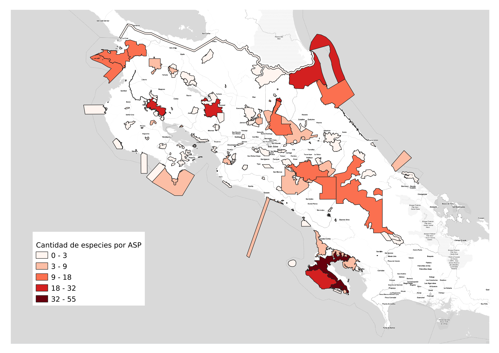
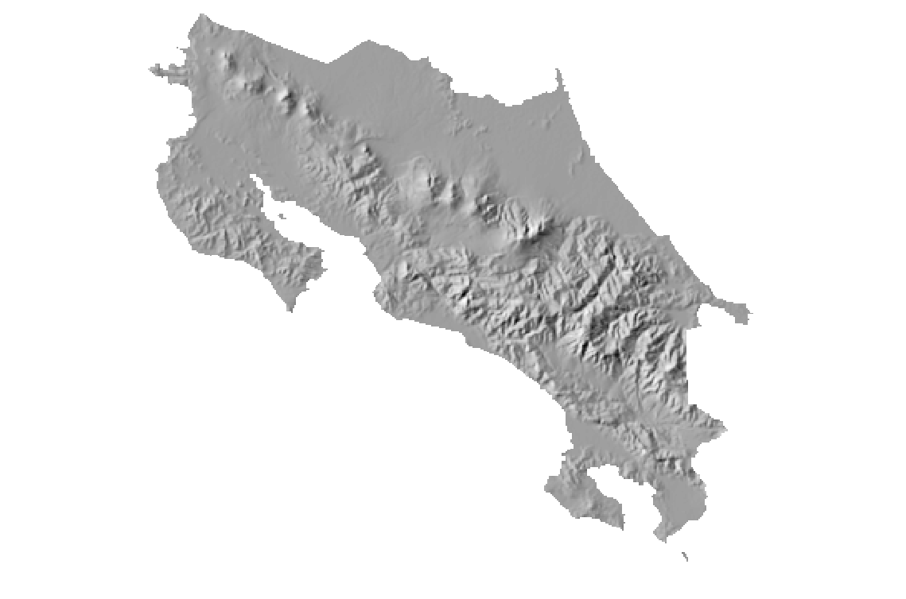
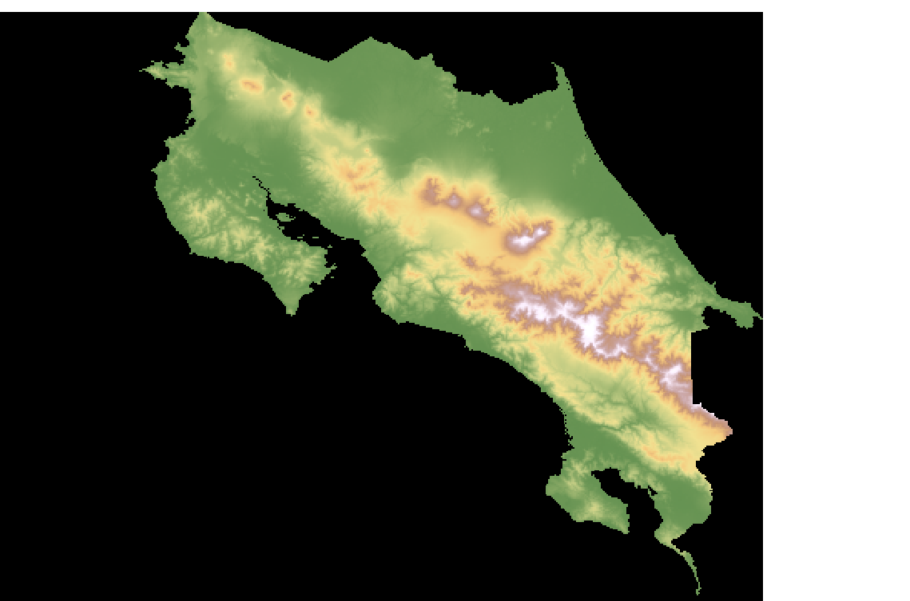

GDAL: biblioteca para lectura y escritura de datos geoespaciales#
Trabajo previo#
Tutoriales#
Gandhi, U. (2020a, febrero 1). Mastering GDAL Tools. Spatial Thoughts. https://spatialthoughts.com/courses/mastering-gdal-tools/
Resumen#
Se introduce la biblioteca GDAL para lectura y escritura de datos geoespaciales y se muestran varios ejemplos de su uso a través de los programas para la línea de comandos del sistema operativo.
Características generales de GDAL#
Geospatial Data Abstraction Library (GDAL) es una biblioteca para leer y escribir datos geoespaciales en varios formatos raster y vectoriales. En ocasiones, también es denominada GDAL/OGR, en donde GDAL se refiere a la funcionalidad para datos raster y OGR (sigla antes usada para “OpenGIS Simple Features Reference Implementation”) a la correspondiente a datos vectoriales. En este documento, se utilizará la sigla GDAL para referirse a la funcionalidad para ambos modelos de datos. GDAL es distribuida por la Open Source Geospatial Foundation (OSGeo) con una licencia X/MIT.
GDAL cuenta con un único modelo abstracto de datos raster y un único modelo abstracto de datos vectoriales, lo que permite programar aplicaciones geoespaciales sin tener que ocuparse de las particularidades de cada formato que se utilice (GeoTIFF, NetCDF, ESRI Shapefile, GeoPackage, GeoJSON, etc.).
A pesar de que GDAL está programada en C/C++, cuenta con una interfaz de programación de aplicaciones (API; en inglés, Application Programming Interface) para varios lenguajes de programación, incluyendo C, C++, Python y Java. Además, ofrece un conjunto de programas para la línea de comandos del sistema operativo cuyas distribuciones binarias están disponibles para varios sistemas operativos, incluyendo Windows, macOS y Linux. Estas API y los programas también están incluídos en la plataforma de ciencia de datos Anaconda, la cual puede instalarse en todos los sistemas operativos mencionados.
Programas para la línea de comandos del sistema operativo#
Los programas de GDAL para la línea de comandos del sistema operativo permiten ejecutar tareas de geoprocesamiento y de conversión entre formatos geoespaciales sin utilizar una interfaz gráfica o un lenguaje de programación.
Instalación#
En el sitio web de GDAL se describen varias opciones para su descarga e instalación, incluyendo archivos binarios ejecutables para varias plataformas.
Seguidamente, se detalla el procedimiento de instalación mediante Conda, el cual puede ejecutarse desde Linux, macOS o Windows. Conda es un administrador de paquetes que puede instalarse como parte de Anaconda o Miniconda (se recomienda esta última opción, por requerir menos recursos). Entre otras ventajas, conda permite el manejo de ambientes (environments), cada uno con sus propias versiones de los paquetes instalados.
Para instalar los programas de GDAL, luego de instalar Anaconda o Miniconda, ejecute los siguientes comandos desde una terminal:
# Actualización de Conda
conda update -n base -c defaults conda
# Borrado del ambiente (si es que existe)
# conda remove -n geopython --all
# Instalación de mamba
conda install -n base mamba -c conda-forge
# Creación del ambiente
conda create -n geopython
# Activación del ambiente
conda activate geopython
# Configuración del ambiente
conda config --env --add channels conda-forge
conda config --env --set channel_priority strict
# Instalación de bibliotecas
mamba install git python jupyter jupyter-book ghp-import numpy pandas matplotlib seaborn plotly gdal fiona shapely geopandas pyarrow duckdb rasterio xarray rioxarray earthpy xarray-spatial pystac-client python-graphviz folium leafmap lonboard streamlit
# Desactivación del ambiente
conda deactivate
Una vez instalado el ambiente, puede activarse y desactivarse con conda activate gdal y conda deactivate respectivamente.
Consideraciones generales#
Los programas de GDAL comparten una serie de opciones comunes para datos raster y de opciones comunes para datos vectoriales que pueden visualizarse con la opción -- help-general. Por ejemplo:
ogrinfo --help-general
Generic GDAL utility command options:
--version: report version of GDAL in use.
--license: report GDAL license info.
--formats: report all configured format drivers.
--format [format]: details of one format.
--optfile filename: expand an option file into the argument list.
--config key value: set system configuration option.
--debug [on/off/value]: set debug level.
--pause: wait for user input, time to attach debugger
--locale [locale]: install locale for debugging (i.e. en_US.UTF-8)
--help-general: report detailed help on general options.
Para obtener ayuda acerca de un comando particular, puede usarse la opción -- help. Por ejemplo:
ogrinfo --help
Usage: ogrinfo [--help-general] [-ro] [-q] [-where restricted_where|@filename]
[-spat xmin ymin xmax ymax] [-geomfield field] [-fid fid]
[-sql statement|@filename] [-dialect sql_dialect] [-al] [-rl] [-so] [-fields={YES/NO}]
[-geom={YES/NO/SUMMARY}] [[-oo NAME=VALUE] ...]
[-nomd] [-listmdd] [-mdd domain|`all`]*
[-nocount] [-noextent] [-nogeomtype] [-wkt_format WKT1|WKT2|...]
[-fielddomain name]
datasource_name [layer [layer ...]]
Ejemplos de uso de programas#
En esta sección, se presentan ejemplos de uso de los programas, tanto para datos vectoriales como para datos raster.
Programas para datos vectoriales#
ogrinfo#
El programa ogrinfo despliega información acerca de una fuente de datos vectoriales.
Los siguientes comandos despliegan información sobre la capa de países de Natural Earth, tanto para el formato comprimido como para el formato shapefile. En el caso comprimido, note el uso de /vsizip/, para sistemas de archivos virtuales.
# Descarga del archivo ZIP (en Windows, puede instalar wget o descargar el archivo con un navegador)
# https://www.naturalearthdata.com/downloads/110m-cultural-vectors/ - Admin 0 – Countries
# Información sobre la capa comprimida en formato ZIP
ogrinfo -al -so /vsizip/ne_110m_admin_0_countries.zip
# Descompresión del archivo ZIP
unzip ne_110m_admin_0_countries.zip
# Información sobre la capa descomprimida en formato SHP
ogrinfo -al -so ne_110m_admin_0_countries.shp
INFO: Open of `ne_110m_admin_0_countries.shp'
using driver `ESRI Shapefile' successful.
Layer name: ne_110m_admin_0_countries
Metadata:
DBF_DATE_LAST_UPDATE=2021-12-07
Geometry: Polygon
Feature Count: 177
Extent: (-180.000000, -90.000000) - (180.000000, 83.645130)
Layer SRS WKT:
GEOGCRS["WGS 84",
DATUM["World Geodetic System 1984",
ELLIPSOID["WGS 84",6378137,298.257223563,
LENGTHUNIT["metre",1]]],
PRIMEM["Greenwich",0,
ANGLEUNIT["degree",0.0174532925199433]],
CS[ellipsoidal,2],
AXIS["latitude",north,
ORDER[1],
ANGLEUNIT["degree",0.0174532925199433]],
AXIS["longitude",east,
ORDER[2],
ANGLEUNIT["degree",0.0174532925199433]],
ID["EPSG",4326]]
Data axis to CRS axis mapping: 2,1
featurecla: String (15.0)
scalerank: Integer (1.0)
LABELRANK: Integer (1.0)
SOVEREIGNT: String (32.0)
...
Para consultar los datos, puede utilizarse el lenguaje Structured Query Language (SQL) junto con el dialecto sqlite y sus funciones espaciales. Estas funcionalidades espaciales son parte de los proyectos de Gaia-SINS.
# Consulta SQL (en Windows, sustituya los "\" por "^" para los cambios de línea)
ogrinfo \
-sql "SELECT name, continent FROM ne_110m_admin_0_countries WHERE continent = 'Oceania' ORDER BY name" \
-geom=NO \
ne_110m_admin_0_countries.shp
...
OGRFeature(ne_110m_admin_0_countries):137
name (String) = Australia
continent (String) = Oceania
OGRFeature(ne_110m_admin_0_countries):0
name (String) = Fiji
continent (String) = Oceania
OGRFeature(ne_110m_admin_0_countries):134
name (String) = New Caledonia
continent (String) = Oceania
OGRFeature(ne_110m_admin_0_countries):136
name (String) = New Zealand
continent (String) = Oceania
OGRFeature(ne_110m_admin_0_countries):7
name (String) = Papua New Guinea
continent (String) = Oceania
OGRFeature(ne_110m_admin_0_countries):135
name (String) = Solomon Is.
continent (String) = Oceania
OGRFeature(ne_110m_admin_0_countries):89
name (String) = Vanuatu
continent (String) = Oceania
ogr2ogr#
El comando ogr2ogr realiza conversiones entre formatos de fuentes de datos vectoriales. A la vez, puede ejecutar otras operaciones como selección de atributos y geometrías, filtrado por criterios espaciales y no espaciales, reproyección y validación de geometrías, entre otras.
Visualización de la lista de formatos vectoriales:
# Despliegue de la lista de formatos vectoriales soportados por GDAL/OGR
ogr2ogr --formats
Supported Formats:
FITS -raster,vector- (rw+): Flexible Image Transport System
PCIDSK -raster,vector- (rw+v): PCIDSK Database File
netCDF -raster,multidimensional raster,vector- (rw+vs): Network Common Data Format
PDS4 -raster,vector- (rw+vs): NASA Planetary Data System 4
VICAR -raster,vector- (rw+v): MIPL VICAR file
JP2OpenJPEG -raster,vector- (rwv): JPEG-2000 driver based on OpenJPEG library
PDF -raster,vector- (rw+vs): Geospatial PDF
MBTiles -raster,vector- (rw+v): MBTiles
BAG -raster,multidimensional raster,vector- (rw+v): Bathymetry Attributed Grid
EEDA -vector- (ro): Earth Engine Data API
OGCAPI -raster,vector- (rov): OGCAPI
ESRI Shapefile -vector- (rw+v): ESRI Shapefile
...
Conversión entre formatos:
# Conversión de SHP a GeoJSON
ogr2ogr ne_110m_admin_0_countries.geojson ne_110m_admin_0_countries.shp
# Conversión de SHP a GeoPackage
ogr2ogr ne_110m_admin_0_countries.gpkg ne_110m_admin_0_countries.shp
Ejemplo de análisis: distribución de especies de murciélagos#
Se analiza la distribución de especies de murciélagos en Costa Rica con base en varias divisiones del territorio.
Se utilizan las siguientes fuentes de datos:
Capas geoespaciales de Costa Rica agrupadas por el Sistema Nacional de Información Territorial (SNIT).
Se crea el archivo distribucion-murcielagos.gpkg para contener las capas necesarias para el análisis.
Descarga de capas desde servicios Web Feature Service (WFS) agrupados en el SNIT, reproyección y validación de geometrías:
# Lista de capas en servicio WFS del Sinac
ogrinfo WFS:"http://geos1pne.sirefor.go.cr/wfs"
# Descarga a GPKG de la capa WFS de áreas silvestres protegidas (ASP) con reproyección a WGS84 y validación de geometrías
ogr2ogr -nln asp \
-s_srs EPSG:5367 -t_srs EPSG:4326 \
-makevalid \
distribucion-murcielagos.gpkg WFS:"http://geos1pne.sirefor.go.cr/wfs" "PNE:areas_silvestres_protegidas"
# Información sobre la capa descargada
ogrinfo -al -so distribucion-murcielagos.gpkg asp
# Lista de capas en servicio WFS del IGN
ogrinfo WFS:"https://geos.snitcr.go.cr/be/IGN_5_CO/wfs"
# Descarga a GPKG de la capa WFS de cantones con reproyección a WGS84 y validación de geometrías
ogr2ogr -update -nln cantones \
-s_srs EPSG:5367 -t_srs EPSG:4326 \
-makevalid \
distribucion-murcielagos.gpkg WFS:"https://geos.snitcr.go.cr/be/IGN_5/wfs" "IGN_5:limitecantonal_5k"
# Información sobre la capa descargada
ogrinfo -al -so distribucion-murcielagos.gpkg cantones
Descarga de datos de presencia de murciélagos desde un archivo CSV y conversión a un formato geoespacial:
# Descarga de registros de presencia de murciélagos
wget https://api.gbif.org/v1/occurrence/download/request/0001775-250827131500795.zip
# Descompresión
unzip 0001775-250827131500795.zip
# Cambio de nombre del archivo (en Windows, puede usar el comando ren)
mv 0001775-250827131500795.csv murcielagos.csv
# Información sobre el conjunto de datos, sin interpretación de columnas de coordenadas
ogrinfo -al -so murcielagos.csv
# Información sobre el conjunto de datos, con interpretación de columnas de coordenadas
ogrinfo -al -so \
-oo X_POSSIBLE_NAMES=decimalLongitude -oo Y_POSSIBLE_NAMES=decimalLatitude \
murcielagos.csv
# Adición al GPKG de análisis de distribución de murciélagos
ogr2ogr -update -nln registros-murcielagos \
-s_srs EPSG:4326 -t_srs EPSG:4326 \
-oo X_POSSIBLE_NAMES=decimalLongitude -oo Y_POSSIBLE_NAMES=decimalLatitude \
distribucion-murcielagos.gpkg murcielagos.csv
Generación de capa con cantidad de especies de murciélagos en polígonos:
# Revisión de índices y nombres de columnas geométricas
ogrinfo \
-sql "SELECT table_name, column_name, HasSpatialIndex(table_name, column_name) FROM gpkg_geometry_columns" \
distribucion-murcielagos.gpkg
# Creación de capa con cantidad de especies por ASP
ogr2ogr \
-update -nln asp-especies \
-dialect sqlite -sql "SELECT ST_Union(p.SHAPE), p.nombre_asp, Count(DISTINCT species) AS especies_murcielagos FROM asp p LEFT JOIN 'registros-murcielagos' r ON ST_Contains(p.SHAPE, r.geom) GROUP BY p.nombre_asp" \
distribucion-murcielagos.gpkg distribucion-murcielagos.gpkg
# Creación de capa con cantidad de especies por cantón
ogr2ogr \
-update -nln cantones-especies \
-dialect sqlite \
-sql 'SELECT
c.geom,
c."CANTÓN" AS canton,
COUNT(DISTINCT r.species) AS especies_murcielagos
FROM "cantones" AS c
LEFT JOIN "registros-murcielagos" AS r
ON ST_Contains(c.geom, r.geom)
GROUP BY c.geom, c."CANTÓN"' \
distribucion-murcielagos.gpkg distribucion-murcielagos.gpkg
La Fig. 26 muestra un mapa de coropletas elaborado con QGIS, con la distribución de especies de murciélagos por ASP:

Fig. 26 Mapa de cantidad de especies de murciélagos por cantón.#
Preguntas
¿Cuáles son las 5 ASP con mayor cantidad de especies de murciélagos?
# 5 ASP con mayor cantidad de especies de murciélagos
ogrinfo \
-sql "SELECT nombre_asp, especies_murcielagos FROM 'asp-especies' ORDER BY especies_murcielagos DESC LIMIT 5" \
distribucion-murcielagos.gpkg
OGRFeature(SELECT):0
nombre_asp (String) = Golfo Dulce
especies_murcielagos (Integer) = 68
OGRFeature(SELECT):1
nombre_asp (String) = Corcovado
especies_murcielagos (Integer) = 44
OGRFeature(SELECT):2
nombre_asp (String) = La Selva
especies_murcielagos (Integer) = 42
OGRFeature(SELECT):3
nombre_asp (String) = Palo Verde
especies_murcielagos (Integer) = 41
OGRFeature(SELECT):4
nombre_asp (String) = Arenal Monteverde
especies_murcielagos (Integer) = 36
¿Cuál es el promedio de especies de murciélagos en los cantones de la provincia de Heredia?
# Cantidad de especies de murciélagos en los cantones de la provincia de Heredia
ogrinfo \
-sql "SELECT c.'CANTÓN', especies_murcielagos FROM cantones c, 'cantones-especies' ce WHERE c.PROVINCIA = 'Heredia' AND c.'CANTÓN'=ce.canton ORDER BY especies_murcielagos DESC" \
distribucion-murcielagos.gpkg
...
OGRFeature(SELECT):0
CANTÓN (String) = Sarapiquí
especies_murcielagos (Integer) = 81
OGRFeature(SELECT):1
CANTÓN (String) = Heredia
especies_murcielagos (Integer) = 25
OGRFeature(SELECT):2
CANTÓN (String) = Barva
especies_murcielagos (Integer) = 7
OGRFeature(SELECT):3
CANTÓN (String) = Santo Domingo
especies_murcielagos (Integer) = 5
OGRFeature(SELECT):4
CANTÓN (String) = San Rafael
especies_murcielagos (Integer) = 5
OGRFeature(SELECT):5
CANTÓN (String) = Santa Bárbara
especies_murcielagos (Integer) = 0
OGRFeature(SELECT):6
CANTÓN (String) = San Isidro
especies_murcielagos (Integer) = 0
OGRFeature(SELECT):7
CANTÓN (String) = Belén
especies_murcielagos (Integer) = 0
OGRFeature(SELECT):8
CANTÓN (String) = Flores
especies_murcielagos (Integer) = 0
OGRFeature(SELECT):9
CANTÓN (String) = San Pablo
especies_murcielagos (Integer) = 0
# Promedio de especies de murciélagos en los cantones de la provincia de Heredia
ogrinfo \
-sql "SELECT Avg(especies_murcielagos) promedio FROM cantones c, 'cantones-especies' ce WHERE c.provincia = 'Heredia' AND c.'CANTÓN'=ce.canton" \
distribucion-murcielagos.gpkg
promedio: Real (0.0)
OGRFeature(SELECT):0
promedio (Real) = 12.3
...
¿Cuáles son las 5 especies de murciélagos con mayor cantidad de registros?
Programas para datos raster#
gdalinfo#
El programa gdalinfo despliega información acerca de una fuente de datos raster.
Los siguientes comandos trabajan con la capa global de altitud de la base de datos de tiempo y clima WorldClim.
Descarga y descompresión de la capa de altitud global:
# Descarga de la capa de altitud global
wget https://geodata.ucdavis.edu/climate/worldclim/2_1/base/wc2.1_30s_elev.zip
# Descompresión
unzip wc2.1_30s_elev.zip
Información sobre la capa:
# Información sobre la capa
gdalinfo -stats wc2.1_30s_elev.tif
Driver: GTiff/GeoTIFF
Files: wc2.1_30s_elev.tif
Size is 43200, 21600
Coordinate System is:
GEOGCRS["WGS 84",
ENSEMBLE["World Geodetic System 1984 ensemble",
MEMBER["World Geodetic System 1984 (Transit)"],
MEMBER["World Geodetic System 1984 (G730)"],
MEMBER["World Geodetic System 1984 (G873)"],
MEMBER["World Geodetic System 1984 (G1150)"],
MEMBER["World Geodetic System 1984 (G1674)"],
MEMBER["World Geodetic System 1984 (G1762)"],
MEMBER["World Geodetic System 1984 (G2139)"],
ELLIPSOID["WGS 84",6378137,298.257223563,
LENGTHUNIT["metre",1]],
ENSEMBLEACCURACY[2.0]],
PRIMEM["Greenwich",0,
ANGLEUNIT["degree",0.0174532925199433]],
CS[ellipsoidal,2],
AXIS["geodetic latitude (Lat)",north,
ORDER[1],
ANGLEUNIT["degree",0.0174532925199433]],
AXIS["geodetic longitude (Lon)",east,
ORDER[2],
ANGLEUNIT["degree",0.0174532925199433]],
USAGE[
SCOPE["Horizontal component of 3D system."],
AREA["World."],
BBOX[-90,-180,90,180]],
ID["EPSG",4326]]
Data axis to CRS axis mapping: 2,1
Origin = (-180.000000000000000,90.000000000000000)
Pixel Size = (0.008333333333333,-0.008333333333333)
Metadata:
AREA_OR_POINT=Area
Image Structure Metadata:
COMPRESSION=DEFLATE
INTERLEAVE=BAND
Corner Coordinates:
Upper Left (-180.0000000, 90.0000000) (180d 0' 0.00"W, 90d 0' 0.00"N)
Lower Left (-180.0000000, -90.0000000) (180d 0' 0.00"W, 90d 0' 0.00"S)
Upper Right ( 180.0000000, 90.0000000) (180d 0' 0.00"E, 90d 0' 0.00"N)
Lower Right ( 180.0000000, -90.0000000) (180d 0' 0.00"E, 90d 0' 0.00"S)
Center ( 0.0000000, 0.0000000) ( 0d 0' 0.01"E, 0d 0' 0.01"N)
Band 1 Block=43200x1 Type=Int16, ColorInterp=Gray
Min=-415.000 Max=8424.000
Minimum=-415.000, Maximum=8424.000, Mean=nan, StdDev=nan
NoData Value=-32768
Metadata:
STATISTICS_MAXIMUM=8424
STATISTICS_MEAN=1.#SNAN
STATISTICS_MINIMUM=-415
STATISTICS_STDDEV=1.#SNAN
gdalwarp#
El programa gdalwarp se utiliza para reproyectar y transformar datos raster.
Recorte de la capa raster de altitud global con el contorno de la capa de cantones de Costa Rica:
# Recorte de la capa raster de altitud global con el contorno de la capa de cantones de Costa Rica
gdalwarp \
-dstnodata -9999 \
-tr 0.00833333 0.00833333 -q \
-cutline 'distribucion-murcielagos.gpkg' -cl cantones -crop_to_cutline wc2.1_30s_elev.tif altitud-cr.tif
# Información sobre la capa de altitud de Costa Rica
gdalinfo -stats altitud-cr.tif
gdaldem#
El programa gdaldem proporciona un conjunto de herramientas para analizar y visualizar modelos digitales de elevaciones (DEM; en inglés, Digital Elevation Model).
Generación de hillshade (efecto de relieve):
# Generación de efecto "hillshade"
gdaldem hillshade 'altitud-cr.tif' 'relieve-cr.tif' -s 111120
# Generación de efecto "hillshade" multidireccional
gdaldem hillshade 'altitud-cr.tif' 'relieve-multi-cr.tif' -s 111120 -multidirectional
El hillshade multidireccional se muestra en la Fig. 27.

Fig. 27 Mapa de Costa Rica con hillshade (efecto relieve) multidireccional.#
Generación de efecto relieve de color:
Se requiere un archivo con la codificación de los colores para cada banda de altitud, como el siguiente:
# Contenido de colores.txt
# altitud, rojo, verde, azul
0,101,146,82
500,190,202,130
1000,241,225,145
1500,244,200,126
2000,197,147,117
2500,204,169,170
3000,251,238,253
3500,255,255,255
nv 0 0 0 0
# Generación de efecto relieve de color
gdaldem color-relief 'altitud-cr.tif' colores.txt relieve-color-cr.tif
El efecto relieve de color se muestra en la Fig. 28.

Fig. 28 Mapa de Costa Rica con efecto relieve de color.#